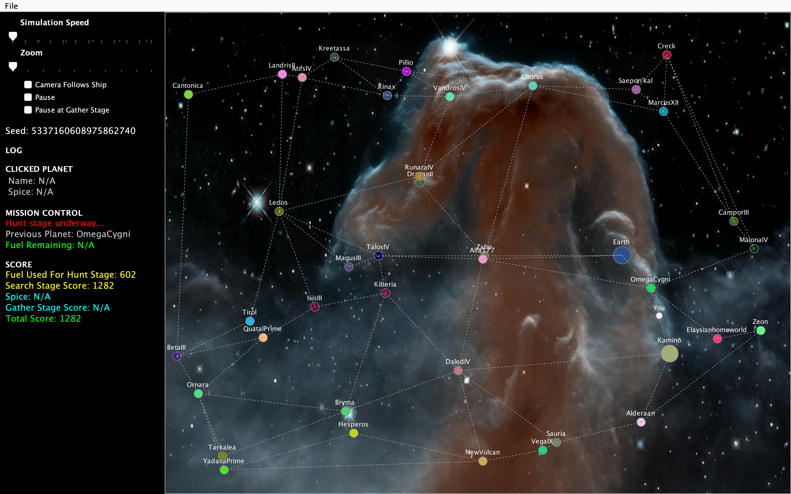
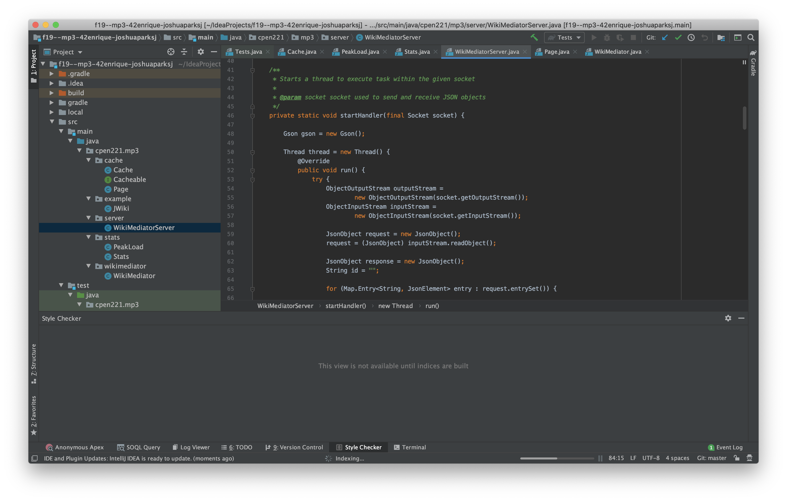
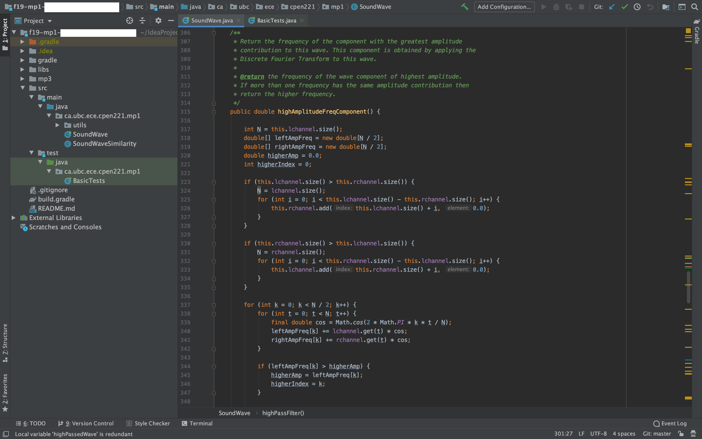

CPEN 221

Kamino Game
Key Points
- Built a Java game involving a spaceship that hunts and gathers spices from a set of randomly distributed planets
- Implemented a Graph Abstract Data Type representing planets as nodes
- Found shortest desired path using Prim's minimum spanning tree algorithm
- Contributor: Enrique Moran and Joshua Park
Kamino Game
Key Points
- Built a Java game involving a spaceship that hunts and gathers spices from a set of randomly distributed planets
- Implemented a Graph Abstract Data Type representing planets as nodes
- Found shortest desired path using Prim's minimum spanning tree algorithm
- Contributor: Enrique Moran and Joshua Park

Wikipedia and Graph Databases
Key Points
- Programmed a Java application used external libraries and APIs for data processing
- Implemented concurrent processing of related operations and core computaing abstractions such as chaching
- Parsed and executed structured queries
- Contributor: Enrique Moran and Joshua Park

Waves and Music Editor
Key Points
- Programmed a Java application that could modify sound files
- Can add echoes, filter low frequencies, comparing sound waves, and support discrete Fourier transformation of soundwaves
- Contributor: Enrique Moran and Joshua Park